4 Синхронизация мультиагентных систем
Задачу синхронизации автономных агентов решает сетевой контроллер, который направляет агентов на общую траекторию. Выводится необходимое и достаточное условие синхронизации и обсуждаются условия синхронности линейных агентов. Для агентов с индивидуальной динамикой принцип внутренней ссылки утверждает, что все агенты должны иметь общую динамику, чтобы их можно было синхронизировать. Сети осцилляторов Курамото демонстрируют важные явления синхронизации нелинейных сетевых систем.
4.1 Проблема синхронизации
В этой главе вводится и решается проблема синхронизации как важное расширение проблемы консенсуса. Основное различие между обоими исследованиями заключается в том, что теперь агенты представляют собой системы с произвольной динамикой и они должны «договариваться» об общей выходной траектории \({y_s}(t)\). В задаче консенсуса агенты имели интегрирующую динамику и должны приближаться к общему конечному состоянию \(\bar x\). В обоих случаях синхронная траектория \({y_s}(t)\) или консенсусное значение \(\bar x\) не задаются внешней единицей, как искомая траектория \({y_{{\rm{ref}}}}(t)\) в классической задаче о сервомеханизмах, а проявляются как соглашение между агентами.
Сетевая система имеет ту же структуру, что и для задачи консенсуса (рис. 4.1 (слева)). Основное отличие заключается в динамических свойствах агентов \({P_i}\), (\(i=1,2,\dots,N\)), которые теперь могут иметь произвольную динамику и, следовательно, вектор состояния \({x_i}(t)\), а не скалярное состояние \({x_i}(t)\). Единственное ограничение, используемое в первой части главы, требует, чтобы все агенты имели одинаковые свойства, но это требование будет снято во второй части. Проблема синхронизации ставится относительно выходного сигнала агента \({y_i}(t)\), и агентам разрешается передавать только выходной сигнал (а не состояние \({x_i}(t)\)) соседним агентам по сети связи.
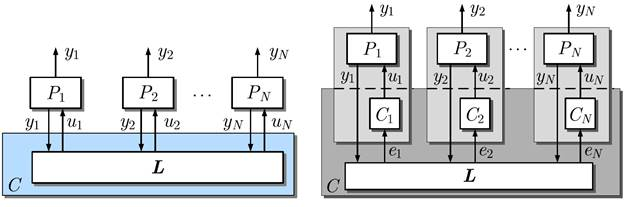
Чтобы избежать тривиальных решений, общая выходная траектория \({y_s}(t)\) нестабильна в том смысле, что агенты должны приближаться к нетривиальной функции времени \[{y_s}(t)\mathop {\cancel{ \to}}\limits^{t \to \infty } 0\] а не точка устойчивого равновесия \(\bar x = 0\) их пространства состояний. Следовательно, предполагается, что агенты нестабильны (или критически стабильны), и вся сетевая система должна иметь такие же свойства. Основная проблема состоит в том, чтобы ввести соответствующую коммуникационную сеть \(L\) так, чтобы все агенты асимптотически приближались к одной и той же траектории \({y_s}(t)\).
Определение 4.1 (Асимптотическая синхронизация)
Многоагентная система называется синхронной, если для всех начальных состояний \({x_{i0}}\), (\(i=1,2,\dots,N\)) агентов соотношение \[\mathop {\lim }\limits_{t \to \infty } \left| {{y_i}(t) - {y_s}(t)} \right| = 0,\quad i = 1,2, \ldots ,N \tag{4.1}\] выполняется для некоторой синхронной траектории \({y_s}(t)\).
Это определение иллюстрирует рис. 4.2, на котором показано поведение осцилляторов, которые начинаются в разных начальных состояниях и асимптотически приближаются к одной и той же синусоидальной траектории \({y_s}(t)\).
Правая часть рис. 4.1 показывает, что в общем случае сетевой контроллер состоит из локальных контроллеров \({C_i}\), (\(i=1,2,\dots,N\)) и коммуникационной сети, описываемой матрицей Лапласа \(L\). Внедрение локальных контроллеров может быть необходимо по двум причинам. Во-первых, если агенты не синхронизируются, расширение агентов \({P_i}\) динамикой \({C_i}\) может сделать расширенных агентов синхронизируемыми. Во-вторых, локальные регуляторы должны использоваться сознательно, если поведение всей системы рассматривается не только в отношении асимптотической синхронизации, описываемой уравнением (4.1), но и переходное поведение всей системы в направлении синхронной траектории должно удовлетворять заданным требованиям. Обе ситуации будут исследованы позже.
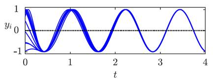
Понятие синхронизации. Синхронизация означает сохранение времени. Подсистемы общей системы должны иметь общее свойство во времени. В простейшем случае пары антенн мобильного телефона должны быть синхронизированы таким образом, чтобы одна антенна прослушивала, а другая отправляла некоторую информацию. Проблема синхронизации, рассматриваемая в этой главе, является более сложной, поскольку выход агентов должен не только включаться и выключаться в один и тот же момент времени, но и подчиняться одной и той же функции времени. Результатом является согласованное поведение, при котором все подсистемы следуют одному и тому же динамическому образцу.
Синхронизация появляется во многих технических и нетехнических приложениях. Технические примеры включают колону транспортных средств на автомагистралях, когда транспортные средства должны следовать одному и тому же профилю скорости (пример 4.3), синхронные машины, которые должны вращаться с небольшими угловыми отклонениями (упражнение 4.29), или управление строем, где должны двигаться роботы или спутники с фиксированным относительным положением. В спорте синхронные прыжки в воду, фигурное катание или гребля требуют точных синхронных действий всех участников.
Основные проблемы. В этой главе рассматривается проблема синхронизации в очень общем виде:
- Агенты могут иметь индивидуальную динамику,
- их локальные контроллеры могут иметь любые динамические компоненты,
- топология связи может быть выбрана свободно.
Единственное сделанное ограничение касается того факта, что обратная связь основана на информации о разнице выходов \({y_i}(t) - {y_j}(t)\) соседних агентов. Это структурное ограничение вытекает из идеи синхронизации. Синхронизация означает, что движение подсистем должно быть подогнано друг к другу или к эталонной траектории, но поведение подсистем не должно качественно изменяться. Следовательно, чем меньше ошибки синхронизации \({y_i}(t) - {y_j}(t)\), тем меньше должно быть влияние сетевого контроллера на агентов. Если агенты движутся по общей траектории, сетевой контроллер больше не действует.
В главе основное внимание уделяется трем аспектам синхронизации:
- Разработка условий для синхронизируемости агентов. Если агенты не синхронизируются, введение локальных контроллеров \({C_i}\) может сделать их синхронизируемыми.
- Вывод необходимых и достаточных условий для асимптотической синхронизации и как эти условия связаны со свойствами агента и со структурой сети.
- Какие соединения между агентами должны быть введены сетевым контроллером для синхронизации агентов.
Второй аспект касается задачи анализа проверки свойства синхронизации системы с заданными свойствами агента и структурой связи, тогда как первый и третий аспекты полезны для целей проектирования. Все три аспекта рассматриваются для наборов идентичных агентов, а затем для агентов с индивидуальной динамикой.
Чтобы сконцентрировать главу на основных проблемах синхронизации, предполагается, что связь является непрерывной во времени, мгновенной и без потерь. То, что результаты можно распространить на сети с задержками связи, показано в упражнении 4.4.
4.2 Модели
4.2.1 Модель агента
Агенты имеют одинаковые динамические свойства и описываются моделью пространства состояний \[{P_i}:\left\{ \begin{array}{l}{{\dot x}_i}(t) = A{x_i}(t) + b{u_i}(t),\quad {x_i}(0) = {x_{i0}}\\{y_i}(t) = {c^{\rm{T}}}{x_i}(t),\end{array} \right.\quad i = 1,2, \ldots ,N \tag{4.2}\]
- где
- \({u_i}(t)\) – входной сигнал,
- \({x_i}(t)\) – \(N\)-мерный вектор состояния,
- \({y_i}(t)\) – выходной сигнал \(i\)-го агента.
Обратите внимание, что матрица \(\mathbf{A}\) и векторы \(\mathbf{b}\) и \({\mathbf c^{\rm{T}}}\) одинаковы для всех агентов. Чтобы объяснить основные идеи, входной и выходной сигналы предполагаются скалярными, но результаты можно обобщить на векторные сигналы (упражнение 4.2). С точки зрения сетевого контроллера вход \({u_i}\) и выход \({y_i}\) обозначают сигналы, посредством которых агенты могут взаимодействовать друг с другом.
Без ограничения общности предполагается, что агенты полностью наблюдаемы через выход \({y_i}(t)\), поскольку ненаблюдаемые режимы не оказывают никакого влияния на условие синхронизации (4.1):
Предположение 4.1 Предполагается, что агенты (4.2) полностью наблюдаемы, т. е. удовлетворяют критерию Хаутуса \[{\rm{rank}}\left( {\begin{array}{*{20}{c}}{\lambda I - A}\\{{c^{\rm{T}}}}\end{array}} \right) = n\quad \forall \lambda \in \sigma , \tag{4.3}\] где \(\sigma \) – спектр матрицы \(\mathbf{A}\).
Следующее предположение должно избегать тривиальных решений проблемы синхронизации.
Предположение 4.2 Предполагается, что (\(n \times n\))-матрица \(\mathbf{A}\) имеет собственные значения с неотрицательной действительной частью.
В набор \[{\sigma _{\rm{u}}} = \{ {\lambda _{{i_1}}}, \ldots ,{\lambda _{{i_j}}}\} \subseteq \sigma \tag{4.4} \] входят все собственные значения \({\lambda _{{i_j}}}\), (\(j=1,2,\dots,m\)) матрицы \(\mathbf{A}\) с \({\mathop{\rm Re}\nolimits} ({\lambda _{{i_j}}}) \ge 0\).
4.2.2 Сетевой контроллер
Сетевой контроллер представлен соотношением \[C:\quad {u_i}(t) = -\sum\limits_{j = 1,j \ne i}^N {{a_{ij}}({y_i}(t) - {y_j}(t)),\quad i = 1,2, \ldots ,N} \tag{4.5} \] с \({a_{ij}}\) в качестве соответствующего элемента матрицы смежности \(\mathbf{A}\) коммуникационного графа. Выходная разность \({y_i}(t) - {y_j}(t)\) возникает в законе управления \(C\) при наличии ребра (\(j \to i\)) в ориентированном графе связи \(\vec{\mathcal{G}}\) всей системы.
В литературе по синхронизации говорят, что регулятор вида (4.5) вводит диффузионные связи между агентами, поскольку управляющий вход зависит не от выходов \({y_i}(t)\) и \({y_j}(t)\) по отдельности, а от разности этих выходов. Название происходит от процессов диффузии, когда молекулы движутся по градиенту концентрации, который представлен разностью концентраций \({y_i}(t) - {y_j}(t)\) двух соседних областей.
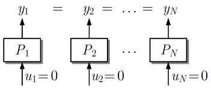
Диффузный характер контроллера означает, что если узлы синхронизированы, сетевой контроллер \(C\) не влияет на поведение агента: \[{y_i}(t) = {y_j}(t) = {y_s}(t),\quad i,j = 1,2, \ldots ,N\quad \Rightarrow \quad {u_i}(t) = 0,\quad i = 1,2, \ldots ,N\] (рис. 4.3). Следовательно, агенты должны иметь возможность следовать синхронной траектории \({y_s}(t)\) благодаря своей внутренней динамике. Эта характеристика отличает синхронизацию от многих проблем управления, когда система вынуждена через свой ненулевой вход следовать номинальной траектории. Это окажется важным для анализа синхронизируемости агентов с индивидуальной динамикой в разделе 4.6. Благодаря этому свойству диффузионные связи в литературе также называют слабыми связями.
Регулятор (4.5) можно записать в терминах матрицы Лапласа \(L = ({l_{ij}})\) как \[C:\quad {u_i}(t) = -\sum\limits_{j = 1}^N {{l_{ij}}{y_j}(t),\quad i = 1,2, \ldots ,N} \tag{4.6} \] а в векторно-матричной форме как \[u(t) = -Ly(t) \tag{4.7} \] с \[u(t) = \left( {\begin{array}{*{20}{c}}{{u_1}(t)}\\{{u_2}(t)}\\ \vdots \\{{u_N}(t)}\end{array}} \right),\quad y(t) = \left( {\begin{array}{*{20}{c}}{{y_1}(t)}\\{{y_2}(t)}\\ \vdots \\{{y_N}(t)}\end{array}} \right)\] и \[\begin{array}{l}{l_{ij}} = -{a_{ij}} \le 0,\quad i \ne j\\{l_{ii}} = \sum\limits_{j = 1,j \ne i}^N {{a_{ij}} \ge 0,\quad i = 1,2, \ldots ,N.} \end{array}\]
Эти уравнения выполняются также, если коммуникационный граф \(\vec{\mathcal{G}}\) взвешен и, следовательно, элементы \({a_{ij}}\) матрицы смежности неотрицательны, вещественны. Сходство контроллера \(C\) с контроллерами, используемыми для решения задач консенсуса, очевидно.
4.2.3 Модель сетевой системы
Для всей системы с \(N\) узлами уравнения (4.2) и (4.6) дают соотношение
\[{\dot x_i}(t) = A{x_i}(t) - b\sum\limits_{j = 1}^N {{l_{ij}}{c^{\rm{T}}}{x_j}(t)} ,\quad i = 1,2, \ldots ,N \tag{4.8} \]Эту модель общей системы \(\bar \sum \) можно записать в виде \[\bar \sum :\left\{ \begin{array}{l}\dot x(t) = \underbrace {\tilde A - \tilde BL\tilde C}_{\bar A}x(t)\\y(t) = \bar Cx(t),\end{array} \right. \tag{4.9} \] где \(x(t)\) обозначает общий вектор состояния \[x(t) = \left( {\begin{array}{*{20}{c}}{{x_1}(t)}\\{{x_2}(t)}\\ \vdots \\{{x_N}(t)}\end{array}} \right)\] а матрицы \(\tilde A\), \(\tilde B\) и \(\tilde C\) – блочно-диагональные матрицы, в которых \(A\), \(b\) или \({c^{\rm{T}}}\), соответственно, располагаются \(N\) раз как диагональные блоки: \[\tilde A = \left( {\begin{array}{*{20}{c}}A&{}&{}&{}\\{}&A&{}&{}\\{}&{}& \ddots &{}\\{}&{}&{}&A\end{array}} \right),\quad \tilde B = \left( {\begin{array}{*{20}{c}}b&{}&{}&{}\\{}&b&{}&{}\\{}&{}& \ddots &{}\\{}&{}&{}&b\end{array}} \right),\quad \tilde C = \left( {\begin{array}{*{20}{c}}{{c^{\rm{T}}}}&{}&{}&{}\\{}&{{c^{\rm{T}}}}&{}&{}\\{}&{}& \ddots &{}\\{}&{}&{}&{{c^{\rm{T}}}}\end{array}} \right)\]
Используя произведение Кронекера (см. приложение 2), эти матрицы можно записать в виде \[\tilde A = {I_N} \otimes A,\quad \tilde B = {I_N} \otimes b\quad {\text{и}}\quad \tilde C = {I_N} \otimes {c^{\rm{T}}},\] а матрицы \(\bar A\) и \(\bar C\) всей системы в виде \[\bar A = {I_N} \otimes A - L \otimes (b{c^{\rm{T}}}) \tag{4.10} \] \[\bar C = {I_N} \otimes {c^{\rm{T}}} \tag{4.11}. \]
Это компактное представление в сжатой форме показывает, как вся система состоит из агентов и взаимосвязей, введенных сетевым контроллером. Во втором члене матрицы \(\bar A\) должно быть определено произведение Кронекера для матрицы \(L\), описывающей структуру связи всей системы, и матрицы \(b{c^{\rm{T}}}\), представляющей связь, возникающую между любой парой непосредственно связанных агентов (\({l_{ij}} \ne 0\)).
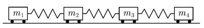
4.3 Асимптотическая синхронизация идентичных агентов
4.3.1 Выход и синхронизация состояния
Определение 4.1 описывает синхронизм как глобальное свойство всей системы \(\bar \sum \), которое имеет место для всех начальных состояний узлов и относится к выходам агента. Свойство синхронизации можно переформулировать как требование к состояниям агента \({x_i}(t)\), как утверждает следующая лемма.
Лемма 4.1 (Эквивалентность синхронизации состояния и выхода)
Для сетевой системы (4.9), удовлетворяющей предположению 4.1, требование синхронизации выхода (4.1) эквивалентно условию синхронизации состояний \[\mathop {\lim }\limits_{t \to \infty } \left\| {{x_i}(t) - {x_j}(t)} \right\| = 0\quad i,j = 1,2,\ldots,N, \tag{4.12} \] которое должно выполняться для произвольных начальных состояний \({x_{i0}}\), (\(i=1,2,\dots,N\)) агентов.
Доказательство. Лемма следует из переформулировки критерия наблюдаемости сетевой системы (4.9):
\[\begin{array}{c}{\rm{rank}}\left( {\begin{array}{*{20}{c}}{\lambda I - \tilde A + \tilde BL\tilde C}\\{\tilde C}\end{array}} \right) = {\rm{rank}}\left( {\left( {\begin{array}{*{20}{c}}{{I_{nN}}}&{ - \tilde BL}\\O&{{I_N}}\end{array}} \right)\left( {\begin{array}{*{20}{c}}{\lambda I - \tilde A}\\{\tilde C}\end{array}} \right)} \right)\\ = N \cdot {\rm{rank}}\left( {\begin{array}{*{20}{c}}{\lambda I - A}\\{{c^{\rm{T}}}}\end{array}} \right)\\ = N \cdot n\quad \forall\;\lambda \in \sigma .\end{array}\]В силу предположения 4.1 матрица во второй строке имеет полный ранг, откуда следует, что система (4.9) вполне наблюдаема. Следовательно, выходные траектории агентов могут быть одинаковыми только в том случае, если совпадают траектории состояний и уравнение (4.1) эквивалентно (4.12), что доказывает лемму.
Согласно лемме, не имеет значения, рассматривается ли в качестве интересующего свойства выходная синхронизация (4.12) или синхронизация состояния (4.12). Однако для условий синхронизации важно, может ли состояние агента \({x_i}(t)\) или только выход \({y_i}(t)\) быть передано другим агентам. Эта глава посвящена в основном второму, более сложному случаю.
Условия синхронизации
В этом разделе выводятся необходимые и достаточные условия синхронности агентов. Сложность вывода такого условия заключается в том, что вся система должна оставаться неустойчивой, поскольку все агенты должны следовать по неустойчивой синхронной траектории \(y_s(t)\). Таким образом, условия устойчивости не могут быть непосредственно применены ко всей системе \(\overline{\Sigma}\). Основная идея состоит в том, чтобы построить модель отклонения \(e_i(t)=x_i(t)-x_1(t)\) состояний агента и доказать, что эта модель асимптотически устойчива. Следовательно, ошибки \(e_i(t)\) асимптотически обнуляются, и все агенты в конечном итоге приближаются к общему выходу \(y_s(t)\).
- Условие, полученное в этом разделе, является основным, поскольку:
- оно дает необходимое и достаточное требование к динамике подсистемы вместе со структурой взаимосвязи, которая имеет сложность n подсистемы, а не порядок \(N \cdot n\) всей системы, и
- его можно использовать в следующем разделе для получения условий синхронизации агентов.
Необходимое и достаточное условие синхронизации дается в следующей теореме.
Теорема 4.1 (Условие синхронизации)
Сетевая система (4.9) синхронна тогда и только тогда, когда матрицы \[\overline{A_i}=A-\lambda_i\{L\}\cdot bc^T \tag{4.13}\] имеют только собственные значения с отрицательной вещественной частью \[Re(\lambda_j\{\overline{A_i}\})<0, \quad i=2,3,\dots,N;\quad j=1,2,\dots,n,\tag{4.14}\] где \(\lambda_i\{L\}\) обозначает \(i\)-е собственное значение лапласовой матрицы \(L\).
- Следующее доказательство использует три факта:
- Условие синхронизации основано на требовании обращения в нуль ошибок синхронизации \(e_i(t)=x_i(t)-x_1(t)\), \((i = 2, 3, \dots, N)\).
- Поскольку у агентов одинаковая динамика, ошибки синхронизации могут быть представлены в виде \(N-1\) несвязанных уравнений, каждое из которых имеет тот же динамический порядок \(n\), что и агенты. Следовательно, условие синхронизации можно сформулировать как \(N-1\) независимых условий на матрицы \(\overline{A_i}\), \((i = 2, 3, \dots, N)\) порядка \(n\).
- 3. Представление ошибки синхронизации включает собственные значения \(\lambda_2, \lambda_3,\dots,\lambda_N\) матрицы Лапласа \(L\), но не относится к нулевому собственному значению \(\lambda_1\).
Доказательство. Доказательство следует основной линии доказательства теоремы 3.1 на стр. 61. Оно структурировано соответствующим образом, чтобы показать, где необходимы новые идеи для расширения результатов от динамики консенсуса к синхронизации.
1. Представление ошибки синхронизации. Для выполнения условия синхронизации (4.1) необходимо и достаточно выполнения \(N-1\) требований \[\lim_{t \to \infty} \lVert x_i(t) - x_j(t) \rVert = 0, \quad i = 2,3,\dots,N,\tag{4.15}\] которые можно представить через ошибки синхронизации \[e_i(t)=x_i(t)-x_1(t), \quad (i = 2, 3, \dots, N)\] которые следуют дифференциальным уравнениям \[\begin{align*} \dot{e}_i(t) &= \dot{x}_i(t)-\dot{x}_1(t) = \\ &= A x_i(t) - b c^T \sum_{j=1}^{N} l_{ij} x_j(t) - A x_1(t) + b c^T \sum_{j=1}^{N} l_{1j} x_j(t) = \\ &= A e_i(t) - b c^T \sum_{j=1}^{N} (l_{ij}-l_{1j}) x_j(t) = \\ &= A e_i(t) - b c^T \sum_{j=1}^{N} (l_{ij}-l_{1j})(x_j(t)-x_1(t)) - b c^T \underbrace{\sum_{j=1}^{N} (l_{ij}-l_{1j})}_{=0} x_1(t). \end{align*}\]
Последнее слагаемое обнуляется благодаря уравнению (2.27), и модель приобретает вид \[\dot{e}_i(t) = A e_i(t) - b c^T \sum_{j=2}^{N} \underbrace{(l_{ij}-l_{1j})}_{\widetilde l_{ij}}e_j(t),\quad e_i(0)=x_{i0}-x{10}\tag{4.16}\] для \(i = 2, 3, \dots, N\).
2. Свойства матрицы \(\widetilde L_{22}\). Разности \[\widetilde l_{ij}=l_{ij}-l_{1j}, \quad i,j=2,3,\dots,N\] в последней сумме составляют ту же \((N - 1 \times N - 1)\)-матрицу \(\widetilde L_{22}=(\widetilde l_{ij})\), что и при доказательстве теоремы 3.1 на стр. 61 в уравнении (3.11): \[\widetilde L_{22}=L_{22}-\mathbb1/l_{12}^T.\tag{4.17}\]
Собственные значения \(\widetilde L_{22}\) идентичны собственным значениям \(\lambda_2\{L\}, \dots, \lambda_N\{L\}\) (см. уравнение (3.12)).
3. Преобразование представления ошибки синхронизации. Для проверки устойчивости систем (4.16) векторы \(\dot{e}_2(t), \dots, \dot{e}_N(t)\) записываются рядом друг с другом в матрице, чтобы получить уравнение
\[(\dot{e}_2(t) \dot{e}_3(t) \dots \dot{e}_N(t)) = A (e_2(t) e_3(t) \dots e_N(t)) - b c^T (e_2(t) e_3(t) \dots e_N(t)) L_{22}^T, \quad e_i(0) = x_{i0} - x_{10}.\]В дальнейших исследованиях сначала рассматривается случай, когда матрица \(\widetilde L_{22}\) диагонализуема и, следовательно, может быть приведена к диагональной матрице с помощью (\(N-1\))-мерной матрицы \(\widetilde T_{22}^{-1}\):
\[\widetilde T_{22}\widetilde L_{22}^T\widetilde T_{22}^{-1} = \begin{pmatrix} \lambda_2\{L\} & & \\ & \ddots & \\ & & \lambda_N\{L\} \end{pmatrix}.\tag{4.18}\]При таком преобразовании модель приобретает следующий вид:
\[(\dot{e}_2(t) \dot{e}_3(t) \dots \dot{e}_N(t))\widetilde T_{22}^{-1} = A (e_2(t) e_3(t) \dots e_N(t))\widetilde T_{22}^{-1} - b c^T (e_2(t) e_3(t) \dots e_N(t))\widetilde T_{22}^{-1} \cdot \widetilde T_{22}\widetilde L_{22}^T\widetilde T_{22}^{-1} \]После введения преобразованных векторов \[(\widetilde e_2(t) \widetilde e_3(t) \dots \widetilde e_N(t)) = (e_2(t) e_3(t) \dots e_N(t))\widetilde T_{22}^{-1}\] появляется соотношение \[\begin{align*} (\dot{\widetilde e}_2(t) \dot{\widetilde e}_3(t) \dots \dot{\widetilde e}_N(t)) = \\ &= A (\widetilde e_2(t) \widetilde e_3(t) \dots \widetilde e_N(t)) - bc^T (\widetilde e_2(t) \widetilde e_3(t) \dots \widetilde e_N(t)) \begin{pmatrix} \lambda_2\{L\} & & \\ & \ddots & \\ & & \lambda_N\{L\} \end{pmatrix} = \\ &= A (\widetilde e_2(t) \widetilde e_3(t) \dots \widetilde e_N(t)) - bc^T (\lambda_2\{L\}\widetilde e_2(t) \dots \lambda_N\{L\}\widetilde e_N(t)), \end{align*}\] которое можно разложить на \(N-1\) независимых уравнений: \[\dot{\widetilde e}_i(t) = (A-\lambda_i\{L\}bc^T)\widetilde e_i(t), \quad \widetilde e_i(0)=x_{i0}-x_{10}, \quad i=2,3,\dots,N. \tag{4.19}\]
3. Анализ сходиомсти. Условие синхронизации (4.15) эквивалентно \(\lim_{t \to \infty} \lVert x_i(t) - x_j(t) \rVert = 0, \quad (i = 2,3,\dots,N)\) и требованию асимптотической устойчивости матриц \[A-\lambda_i\{L\}bc^T, \quad i = 2,3,\dots,N\] заданных в уравнении (4.13), что доказывает теорему о диагонализуемых матрицах \(L\).
Если матрица \(\widetilde{L}_{22}\) недиагонализуема, то приведенные выше соображения существенно не меняются. После того как матрица \(\widetilde{L}_{22}^T\) была преобразована в жорданову каноническую форму, уравнение (4.19) получает дополнительные слагаемые, как показывает следующее рассмотрение одного жорданового блока: \[\begin{align*} (\dot{\widetilde e}_2(t) \dot{\widetilde e}_3(t) \dots \dot{\widetilde e}_N(t)) = \\ &= A (\widetilde e_2(t) \widetilde e_3(t) \dots \widetilde e_N(t)) - bc^T (\widetilde e_2(t) \widetilde e_3(t) \dots \widetilde e_N(t)) \begin{pmatrix} \lambda_2\{L\} & 0 & \\ 1 & \lambda_2\{L\} & \\ & & \ddots \end{pmatrix} = \\ &= A (\widetilde e_2(t) \widetilde e_3(t) \dots \widetilde e_N(t)) - bc^T (\lambda_2\{L\}\widetilde e_2(t) \dots \lambda_2\{L\}\widetilde e_N(t)), \end{align*}\]
Вместо (4.19) для \(i = 2\) новым уравнением является \[\dot{\widetilde e}_2(t) = (A-\lambda_2\{L\}bc^T)\widetilde e_2(t) - bc^T \widetilde e_3(t), \tag{4.20}\] которое должно быть асимптотически устойчивым, поскольку \(\widetilde e_3(t)\) можно интерпретировать как затухающий вход в систему с матрицей \(A-\lambda_2\{L\}bc^T\).
Интерпретация условия синхронизации. Условие синхронизации теоремы 4.1 существенно отличается от условия консенсуса теоремы 3.1. Для достижения консенсуса единственное требование касается коммуникационного графа, который должен включать остовное дерево, но ребра могут иметь произвольные веса. Напротив, теорема 4.1 показывает, что синхронность возникает только в том случае, если матрицы \({\bar A_i}\), которые определяются уравнением (4.13) через свойства агента (\(A,\;b,\;{c^{\rm{T}}}\)) и сетевой матрицы \(L\), удовлетворяют условию (4.14). Это требование, очевидно, является более ограничительным, чем условие консенсуса, поскольку оно относится как к сетевой структуре, так и к динамике агентов. В разделе 4.4 будет показано, что существуют даже агенты, для которых условие синхронизации не может быть выполнено ни одним сетевым контроллером (4.5).
Введение усиления обратной связи. В моделях, использованных до сих пор, единственная свобода проектирования, которую можно использовать для того, чтобы вся система удовлетворяла требованиям теоремы 4.1, заключается в выборе весов \({a_{ij}}\) ребер (\(j \to i\)) коммуникационного графа. Удобно ввести коэффициент усиления обратной связи \(k\), который одновременно влияет на все ребра графа и может использоваться для регулировки силы их связи с динамикой агентов.
Введение коэффициента обратной связи \(k\) означает замену матрицы Лапласа \(L\) на взвешенную матрицу Лапласа \(kL\) в регуляторе:
\[C:\quad u(t) = -kLy(t).\tag{4.21}\]Тогда матрицы (4.13) преобразуются в \[{\bar A_i} = A - k{\lambda _i}\{ L\} b{c^{\rm{T}}},\quad i = 2,3, \ldots ,N \tag{4.22}\] и их можно заставить удовлетворять условию (4.14), соответствующим образом выбрав коэффициент усиления \(k\). При введении коэффициента усиления \(k\) часто используют нормированную матрицу Лапласа \(\hat L\), а не \(L\).
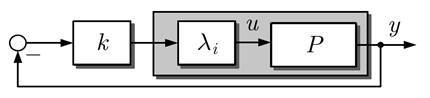
Тестовые матрицы \({\bar A_i}\) можно интерпретировать как матрицу замкнутой системы j-го агента (4.2) вместе с выходной обратной связью
\[{u_j}(t) = -k{\lambda _i}\{ L\} {y_j}(t),\quad i = 2,3, \ldots ,N. \tag{4.23}\]Однако заметим, что в отличие от обычных систем с обратной связью по выходу в рассматриваемом здесь контексте коэффициент усиления обратной связи \({\lambda _i}\{ L\} \) может быть комплексным (проверку устойчивости таких матриц см. в лемме A2.5 на стр. 670). Поскольку существует \(N-1\) различных членов обратной связи, условие синхронизации является условием робастной устойчивости системы обратной связи, показанной на рис. 4.5. Объект в контуре обратной связи состоит из агента \(P = (A,b,{c^{\rm{T}}})\) и дополнительного усиления \({\lambda _i}\{ L\} \). Коэффициент усиления обратной связи \(k\) должен быть выбран таким образом, чтобы одновременно стабилизировались \(N-1\) различных объектов, различающихся по коэффициенту \({\lambda _i}\), (\(i=2,3,\dots,N\)). Этот факт прорисовывает интересную связь между синхронизацией мультиагентных систем и робастным управлением.
Разнообразие объектов, которые обратная связь \(k\) должна одновременно стабилизировать, зависит от структуры связи сетевого контроллера:
- Для направленных коммуникационных графов собственные значения \(L\) могут быть комплексно-сопряженными, что приводит к методологическим трудностям нахождения коэффициента усиления обратной связи \(k\), такого, чтобы объект с комплекснозначными сигналами был устойчиво стабилизирован.
- Для неориентированных графов собственные значения \(L\) действительны, что приводит к «обычной» проблеме устойчивости.
- Для конкретных графов все собственные значения \({\lambda _i}\), (\(i=2,3,\dots,N\)) имеют одно и то же значение, и задача робастного управления сводится к чистой задаче стабилизации с обратной связью по выходу (ср. уравнения (4.26) и (4.28)).
Пример 4.1.Синхронизация двух связанных генераторов
Два незатухающих осциллятора с моделью в пространстве состояний (4.2) с \[A = \left( {\begin{array}{*{20}{c}}0&3\\{ - 3}&0\end{array}} \right),\quad b = \left( {\begin{array}{*{20}{c}}1\\1\end{array}} \right),\quad {c^{\rm{T}}} = \left( {\begin{array}{*{20}{c}}1&{10}\end{array}} \right)\] должны быть синхронизированы. Они полностью связаны, что выражается матрицей Лапласа \[L = \left( {\begin{array}{*{20}{c}}1&{ - 1}\\{ - 1}&1\end{array}} \right)\] с собственными значениями \({\lambda _1} = 0\) и \({\lambda _2} = 2\).
Для регулятора (4.21) условие синхронизации требует, чтобы матрица \[{\bar A_2} = A - k{\lambda _2}b{c^{\rm{T}}} = \left( {\begin{array}{*{20}{c}}0&3\\{ - 3}&0\end{array}} \right) - 2k\left( {\begin{array}{*{20}{c}}1&{10}\\1&{10}\end{array}} \right)\] была асимптотически устойчивой. Подходящее значение \(k\) можно выбрать с помощью критерия устойчивости Гурвица, который учитывает характеристический полином матрицы \({\bar A_2}\) \[\det (\lambda I - {\bar A_2}) = {\lambda ^2} + \underbrace {22k}_{{{\bar a}_1}}\lambda + \underbrace {9 - 54k}_{{{\bar a}_0}} = 0\] и требует, чтобы два коэффициента \({\bar a_1}\) и \({\bar a_0}\) удовлетворяли неравенствам \[\begin{array}{c}22k > 0\quad \Rightarrow \quad k > 0\\9 - 54k > 0\quad \Rightarrow \quad k < 0.167.\end{array}\]
Любой выбор коэффициента усиления обратной связи на интервале \(k\) \( \in \) (0, 0.167) удовлетворяет условию синхронизации теоремы 4.1. Проверка устойчивости матрицы \({A_2}\) приводит к интервалу коэффициента усиления обратной связи \(k\), но ничего не говорит о переходном поведении от начальных состояний агентов к синхронной траектории.
Второй метод заключается в использовании корневого годографа системы \((A,{\lambda _2}b,{c^{\rm{T}}})\) для нахождения подходящего коэффициента усиления обратной связи. Корневой годограф графически показывает, как собственные значения матрицы \({\bar A_2}\) зависят от коэффициента усиления обратной связи \(k\) (рис. 4.6). Обе ветви начинаются при \(k\) = 0 в собственных значениях \({\lambda _{1/2}} = \pm 3{\rm{j}}\) матрицы \(\mathbf{A}\), отмеченных крестиками на мнимой оси. При увеличении \(k\) собственные значения имеют отрицательную действительную часть до тех пор, пока одно из них не покинет левую комплексную полуплоскость, чтобы коэффициент усиления обратной связи \({k_{{\rm{crit}}}} = 0.167\) в начале координат не приблизился к нулю \({s_0} = 2.455\) осцилляторов, отмеченных маленьким кружком. Другая ветвь приближается к \(-\infty\). Ромбами отмечена пара собственных значений коэффициента усиления \({k_{{\rm{crit}}}}\). Кроме того, также показаны пары собственных значений для коэффициентов усиления обратной связи \(k\) = 0,1 (пентаграммы) и \(k\) = 0,15 (звездочки). Эти разные положения собственных значений в комплексной плоскости подразумевают различное переходное поведение синхронизированных осцилляторов.
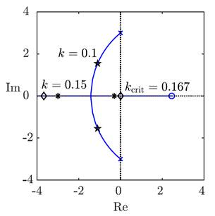
На рисунке 4.7 показаны выходные сигналы связанных генераторов для двух выбранных коэффициентов усиления обратной связи. Оба осциллятора стартуют в разных начальных состояниях и приближаются к общей траектории. Как затухает ошибка синхронизации, зависит от собственных значений модели ошибки (4.16) \[\begin{array}{c}{{\dot e}_2}(t) = A{e_2}(t) - kb{c^{\rm{T}}}({l_{22}} - {l_{12}}){e_2}(t)\\ = (A - 2kb{c^{\rm{T}}}){e_2}(t),\end{array}\tag{4.24} \] которые совпадают с собственными значениями, показанными корневым годографом на рис. 4.6. Следовательно, коэффициент усиления обратной связи \(k\) = 0,1 приводит к более быстрому затуханию ошибки синхронизации, поскольку больший коэффициент усиления обратной связи \(k\) = 0,15. Заметим, что собственные значения матрицы \(A - 2kb{c^{\rm{T}}}\) влияют на скорость затухания ошибки синхронизации, но не влияют на частоту или фазу синусоидальной траектории, к которой в конечном итоге приближаются оба генератора.
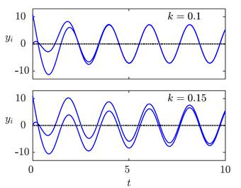
4.3.3 Обсуждение условия синхронизации
Условие (4.14) теоремы 4.1 имеет несколько важных следствий, о которых сейчас пойдет речь.
Требования к структуре связи. Поскольку матрица \(\mathbf{A}\) имеет неустойчивые собственные значения, матрица \({\bar A_i}\) неустойчива при любом обращающемся в нуль собственном значении \({\lambda _i}\{ L\} \), (\(i=2,3,\dots,N\)). Следовательно, из условия теоремы следует требование \[{\lambda _i}\{ L\} \ne 0,\quad i = 2,3, \ldots ,N,\] которое выполняется тогда и только тогда, когда коммуникационный граф содержит остовное дерево (ср. с теоремой 2.1).
Следствие 4.1 (Коммуникационные графы должны иметь остовное дерево)
Для синхронизации неустойчивых агентов структура связи сетевого контроллера должна иметь остовное дерево.
Следовательно, должен существовать хотя бы один агент \({P_i}\), выходы которого прямо или косвенно влияют на входы \({u_j}(t)\), \(j \ne i\) всех остальных агентов. В матрице Лапласа \(L\) может существовать не более одной нулевой строки. Этому требованию удовлетворяют следующие специальные системы:
- Полноценные сети. Полный граф связи \(\vec{\mathcal{G}}\) имеет матрицу Лапласа \[L = \left( {\begin{array}{*{20}{c}}{(N - 1)}&{ - 1}& \cdots &{ - 1}\\{ - 1}&{(N - 1)}& \cdots &{ - 1}\\ \vdots & \vdots & \ddots & \vdots \\{ - 1}&{ - 1}& \cdots &{(N - 1)}\end{array}} \right) \tag{4.25} \] с собственными значениями \[\begin{array}{l}{\lambda _1}\{ L\} = 0\\{\lambda _2}\{ L\} = {\lambda _3}\{ L\} = \ldots = {\lambda _N}\{ L\} = N.\end{array}\] Матрицы (4.22) \[{\bar A_i} = A - kNb{c^{\rm{T}}},\quad i = 2,3, \ldots ,N\] идентичны, поэтому условие синхронизации (4.14) сводится к проверке устойчивости одиночной матрицы \(A - kNb{c^{\rm{T}}}\).
- Агенты подключены к одному пути. Если контроллер использует только связь между парами прямых соседей, как в графе путей на рис. 2.4 на стр. 33, его матрица Лапласа равна \[L = \left( {\begin{array}{*{20}{c}}0&0&0& \cdots &0&0\\{ - 1}&1&0& \cdots &0&0\\0&{ - 1}&1& \cdots &0&0\\ \vdots & \vdots & \vdots & \ddots & \ddots & \vdots \\0&0&0& \cdots &{ - 1}&1\end{array}} \right) \tag{4.26} \] и имеет собственные значения \[\begin{array}{l}{\lambda _1}\{ L\} = 0\\{\lambda _2}\{ L\} = {\lambda _3}\{ L\} = \ldots = {\lambda _N}\{ L\} = 1.\end{array}\] Проверка синхронизации касается \(N-1\) одинаковых матриц \[{\bar A_i} = A - kb{c^{\rm{T}}},\quad i = 2,3, \ldots ,N. \tag{4.27}\] Контролер действует по девизу «Следуй за соседом». Можно ожидать, что агенты будут медленно приближаться к синхронной траектории (и будет показано, что эта гипотеза верна).
- Топология соединения «звезда». Если первый агент напрямую связан со всеми остальными, матрица Лапласа \[L = \left( {\begin{array}{*{20}{c}}0&0& \cdots &0\\{ - 1}&1& \cdots &0\\ \vdots & \vdots & \ddots & \vdots \\{ - 1}&0& \cdots &1\end{array}} \right) \tag{4.28} \] имеет собственные значения \[\begin{array}{l}{\lambda _1}\{ L\} = 0\\{\lambda _2}\{ L\} = {\lambda _3}\{ L\} = \ldots = {\lambda _N}\{ L\} = 1.\end{array}\] Граф связей \(\vec{\mathcal{G}}\) имеет всего \(N-1\) звеньев. Опять же, идентичные матрицы \({\bar A_i}\), (\(i=2,3,\dots,N\)), приведенные в уравнении (4.27), должны быть проверены, чтобы гарантировать синхронизацию всей системы.
Второй и третий графы \(\vec{\mathcal{G}}\) описывают топологии соединений, удовлетворяющие требованию следствия 4.1 с наименьшим возможным количеством ребер. В этих топологиях связи агент \({P_1}\) выступает в роли лидера, фиксирующего синхронную траекторию.
Еще одним интересным аспектом этих сетей является тот факт, что они позволяют изменять размер \(N\) всей системы без изменения параметров контроллера. Если вся система с \(N\) узлами синхронизирована, в сеть можно добавить дополнительные узлы, соединив их с ближайшим соседом или со звездным узлом соответственно, и вся система останется синхронизированной без изменения коэффициента усиления обратной связи \(k\). То же самое происходит, если агенты удаляются из сети.
Структура управления. Контроллер обеспечивает обратную связь относительной информации \({y_i}(t) - {y_j}(t)\) и, как говорят, вводит диффузионные связи. Этот вид обратной связи естественным образом используется в нескольких областях применения:
- Колонны транспортных средств: ошибка расстояния \({s_i}(t) - {s_j}(t)\) вызывает ускорение соответствующих транспортных средств.
- Управление энергосистемой: разница частот \({f_i}(t) - {f_j}(t)\) приводит к передаче мощности по соединительной линии между зонами.
- Кристаллизация: разница температур \({\vartheta _i}(t) - {\vartheta _j}(t)\) вызывает тепловой поток.
- Сети датчиков: разница \({x_i}(t) - {x_j}(t)\) между показаниями измерений соседних датчиков вызывает этап коррекции в распределенном алгоритме для определения среднего значения измерения.
4.3.4 Синхронная траектория
Этот раздел отвечает на вопрос, как найти синхронную траекторию \({y_s}(t)\), к которой асимптотически приближаются все агенты, если выполнены условия теоремы 4.1. Ответ можно найти, расширив идею, которая привела к ответу на тот же вопрос для проблемы консенсуса. В лемме 3.1 на стр. 65 указано, что в сети связанных интеграторов взвешенная сумма \[\sum\limits_{i = 1}^N {{{\hat \omega }_i}{x_i}(t) = \bar x} \] состояний агента остается постоянной вдоль всех траекторий всей системы, где веса \({\hat \omega _i}\) являются элементами нормированного левого собственного вектора матрицы Лапласа \(L\) для нулевого собственного значения \({\lambda _1}\{ L\} = 0\). Для задачи синхронизации эту идею необходимо расширить, чтобы учесть векторные состояния агента \({x_i}(t)\) и тот факт, что синхронная траектория не является постоянной, а является функцией времени \(t\). Опять же решающую роль играет нормированный левый собственный вектор \({\hat \omega ^{\rm{T}}}\) матрицы Лапласа \(L\), удовлетворяющий соотношениям \[{\hat \omega ^{\rm{T}}}L = {0^{\rm{T}}},\quad {\hat \omega ^{\rm{T}}}{\rm{I}} = 1.\]
Аналогично доказательству теоремы 4.1, состояния агентов записываются в виде столбцов (\(n \times N\))-матрицы, что дает следующую модель всей системы:
\[\begin{array}{l}({{\dot x}_1}(t),{{\dot x}_2}(t), \ldots ,{{\dot x}_N}(t))\\\quad \; = A({x_1}(t),{x_2}(t), \ldots ,{x_N}(t)) - b{c^{\rm{T}}}({x_1}(t),{x_2}(t), \ldots ,{x_N}(t)){L^{\rm{T}}}.\end{array}\]После умножения этого уравнения на вектор-столбец \(\hat \omega \) и использования факта \({L^{\rm{T}}}\hat \omega = 0\) получается следующая упрощенная модель:
\[({\dot x_1}(t),{\dot x_2}(t), \ldots ,{\dot x_N}(t))\hat \omega = A({x_1}(t),{x_2}(t), \ldots ,{x_N}(t))\hat \omega .\]Из определения \[{x_s}(t) = \sum\limits_{i = 1}^N {{{\hat \omega }_i}{x_i}(t)} \tag{4.29} \] следует соотношение \[{\dot x_s}(t) = A{x_s}(t).\]
Следовательно, взвешенная сумма (4.29) состояний агента движется в соответствии с динамикой неуправляемого агента. Она начинается в исходном состоянии \[{x_{s0}} = \sum\limits_{i = 1}^N {{{\hat \omega }_i}{x_{i0}}.} \tag{4.30} \]
Эти исследования показывают, что синхронное поведение всей системы \(\bar \sum \) представляет собой движение по траекториям \({x_s}(t)\) и \({y_s}(t)\), порождаемым
Система (4.31) называется виртуальной эталонной системой, поскольку эта система не является явной составляющей общей системы \(\bar \sum \). Ни один агент не предписывает синхронные траектории \({x_s}(t)\) и \({y_s}(t)\), но все агенты вместе «согласны» относительно этих функций времени.
Теорема 4.2 (Синхронная траектория)
Если сетевая система (4.9) удовлетворяет условию теоремы 4.1, то выходы агента асимптотически приближаются к синхронной траектории \({y_s}(t)\), порождаемой виртуальной эталонной системой (4.31) для начального состояния (4.30). Взвешенная сумма \(\sum\nolimits_{i = 1}^N {{{\hat \omega }_i}{y_i}(t)} \) выходов агента следует синхронной траектории \({y_s}(t)\) на всем интервале времени t ≥ 0.
Теорема гласит, что проблема синхронизации, в принципе, включает в себя проблему консенсуса относительно начального состояния \({x_{s0}}\) эталонной системы \({\sum _s}\), которая имеет ту же динамику, что и все агенты. Контроллер должен вывести всех агентов на траекторию состояния и на выходную траекторию, которую генерирует эталонная система. Все траектории зависят от начальных состояний всех агентов и от структуры связи контроллера, которая представлена матрицей Лапласа \(L\) и нормализованным левым собственным вектором \({\hat \omega ^{\rm{T}}}\). В литературе синхронную траекторию \({y_s}(t)\) иногда также называют траекторией консенсуса, чтобы подчеркнуть этот аспект согласия.
Поскольку предполагается, что матрица \(\mathbf{A}\) агента обладает собственными значениями с неотрицательной вещественной частью, синхронная траектория \({y_s}(t)\) является «неустойчивой» в том смысле, что, вообще говоря, агенты не достигают синхронности в своих состояниях равновесия \({x_i} = 0\), но они следуют по зависящей от времени траектории, далекой от точки равновесия всей системы. Следовательно, синхронизированные системы не являются асимптотически устойчивыми. Можно только сказать, что такие системы устойчивы в том смысле, что все выходы агентов \({y_i}(t)\) асимптотически приближаются к общей траектории \({y_s}(t)\).
Как и в проблеме консенсуса:
Начальное состояние \({x_{s0}}\) виртуальной эталонной системы является средним из начальных состояний всех агентов тогда и только тогда, когда матрица Лапласа \(L\) коммуникационного графа сбалансирована по весу.
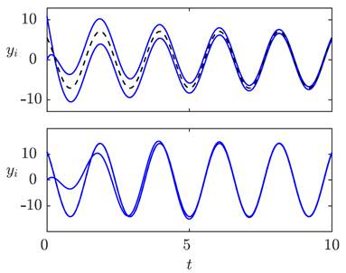
Пример 4.2 Синхронная траектория двух осцилляторов
Два осциллятора, представленные в примере 4.1 на стр. 129, теперь связаны двумя разными способами, чтобы показать зависимость синхронной траектории \({y_s}(t)\) от структуры связи. Для двунаправленных связей матрица Лапласа \[L = \left( {\begin{array}{*{20}{c}}1&{-1}\\{-1}&1\end{array}} \right)\] с нормализованным левым собственным вектором \[{\hat \omega ^{\rm{T}}} = \left( {\begin{array}{*{20}{c}}{0.5}&{0.5}\end{array}} \right)\] приводит к начальному состоянию \[{x_{s0}} = \dfrac{1}{2}({x_{10}} + {x_{20}}),\] которое в примере дает \[{x_{10}} = \left( {\begin{array}{*{20}{c}}1\\1\end{array}} \right),\quad {x_{20}} = \left( {\begin{array}{*{20}{c}}0\\0\end{array}} \right),\quad {x_{s0}} = \left( {\begin{array}{*{20}{c}}{0.5}\\{0.5}\end{array}} \right).\]
Следовательно, синхронная траектория генерируется виртуальной эталонной системой \[{\sum _s}:\quad \left\{ \begin{array}{l}{{\dot x}_s}(t) = \left( {\begin{array}{*{20}{c}}0&3\\{ - 3}&0\end{array}} \right){x_s}(t),\quad {x_s}(0) = \dfrac{1}{2}({x_{10}} + {x_{20}})\\{y_s}(t) = \left( {\begin{array}{*{20}{c}}1&{10}\end{array}} \right){x_s}(t).\end{array} \right.\]
В верхней части рис. 4.8 траектории двух осцилляторов показаны сплошными линиями, а синхронная траектория - пунктирной линией.
При изменении структуры связи изменяется исходное состояние виртуальной эталонной системы. В структуре «лидер-последователь» двух осцилляторов лидер определяет начальное состояние синхронной траектории. В примере с осциллятором, \({P_1}\) – в качестве лидера, матрица Лапласа \[L = \left( {\begin{array}{*{20}{c}}0&0\\{ - 1}&1\end{array}} \right)\] имеет нормированный левый собственный вектор \[{\hat \omega ^{\rm{T}}} = \left( {\begin{array}{*{20}{c}}1&0\end{array}} \right)\] и дает начальное состояние \[{x_{s0}} = {x_{10}} = \left( {\begin{array}{*{20}{c}}1\\1\end{array}} \right)\] виртуальной эталонной системы. Нижняя часть рис. 4.8 показывает, что теперь второй осциллятор, начавший свое движение в нулевом начальном состоянии, приближается к траектории ведущего агента, которая является синхронной траекторией.
4.3.5 Теоретико-управляемая интерпретация диффузионных связей
В этом разделе сетевой контроллер разлагается на локальную обратную связь агента и связи между агентами, а также обобщается аналогичная интерпретация проблемы консенсуса, которая была представлена в разделе 3.3.4. При такой интерпретации вся система предстает как совокупность управляемых агентов, связанных между собой коммуникационной сетью. Чтобы упростить переформулировку, проблема синхронизации рассматривается сначала для сильно связанных агентов, а результат позже будет распространен на структуры лидер-последователь.
Сильно связанные агенты. Обратная связь (4.21) переформулируется как \[{C_i}:\quad {u_i}(t) = - k\left( {{l_{ii}}{y_i}(t) + \sum\limits_{j = 1,j \ne i}^N {{l_{ij}}{y_j}(t)} } \right),\quad i = 1,2, \ldots ,N \tag{4.33} \] чтобы увидеть, что произведение \(k{l_{ii}}\) коэффициента усиления обратной связи \(k\) на диагональный элемент \({l_{ii}}\) матрицы Лапласа \(L\) определяет общее усиление от выхода \({y_i}(t)\) к входу \({u_i}(t)\) i-го агента. Чтобы коэффициент усиления не зависел от матрицы Лапласа \(L\), используется нормированная версия (2.38) матрицы \(L\) \[\hat L = \left( {{\rm{diag}}\dfrac{1}{{{l_{ii}}}}} \right)L, \tag{4.34} \] которая имеет элементы \[\begin{array}{l} - 1 \le {{\hat l}_{ij}} \le 0,\quad i \ne j\\\quad \quad {{\hat l}_{ii}} = 1,\quad i = 1,2, \ldots ,N,\end{array}\] удовлетворяет свойству \[\hat L1 = 0 \tag{4.35} \] и имеет ограниченные собственные значения: \[\left| {{\lambda _i}\{ \tilde L\} } \right| \le 2\quad i = 1,2, \ldots ,N. \tag{4.36} \] (ср. уравнение (2.41)). Поскольку предполагается, что агенты сильно связаны сетевым контроллером, все диагональные элементы \(L\) положительны и \(\hat L\) уравнения (4.34) корректно определено. Тогда уравнение (4.33) будет выглядеть как \[\begin{array}{c}{u_i}(t) = - k\left( {{y_i}(t) + \sum\limits_{j = 1,j \ne i}^N {{{\hat l}_{ij}}{y_j}(t)} } \right)\\ = - k({y_i}(t) - {y_{si}}(t)),\quad \quad \quad \quad i = 1,2, \ldots ,N.\end{array} \tag{4.37} \] \({y_{si}}(t)\) – локальный опорный сигнал \(i\)-го агента, представленный формулой \[\begin{array}{c}{y_{si}}(t) = - \sum\limits_{j = 1,j \ne i}^N {{{\hat l}_{ij}}{y_j}(t)} \quad {\text{при}}\quad - \sum\limits_{j = 1,j \ne i}^N {{{\hat l}_{ij}}} = 1\\ = \sum\limits_{j \in {{\rm N}_i}} {{{\hat a}_{ij}}{y_j}(t)} \end{array} \tag{4.38} \] (ср. уравнение (3.37)). Это средневзвешенное значение выходных сигналов соседних агентов, где веса \({\hat a_{ij}}\) являются элементами нормализованной матрицы смежности \(\hat A\), определенной в уравнении (2.18). Чем больше соседей имеет агент, тем меньше весов \({\hat a_{ij}} = - {\hat l_{ij}}\) влияют на локальный опорный сигнал соседних выходов.
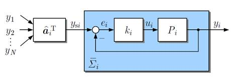
На рис. 4.9 показан управляемый агент \({\bar \sum _i}\), состоящий из \(i\)-го агента (4.2) и локальной обратной связи (4.37) и имеющий модель
Для получения представления всей системы \(\bar \sum \) векторно-матричную запись всех локальных опорных сигналов получают с помощью нормированной матрицы смежности \(\hat A\):
Взаимосвязь контролируемых агентов: \[\left( {\begin{array}{*{20}{c}}{{y_{s1}}(t)}\\{{y_{s2}}(t)}\\ \vdots \\{{y_{sN}}(t)}\end{array}} \right) = \hat A\left( {\begin{array}{*{20}{c}}{{y_1}(t)}\\{{y_2}(t)}\\ \vdots \\{{y_N}(t)}\end{array}} \right) \tag{4.40} \] (ср. уравнение (3.42)). \(i\)-я строка этого уравнения \[{y_{si}}(t) = \hat a_i^T\left( {\begin{array}{*{20}{c}}{{y_1}(t)}\\{{y_2}(t)}\\ \vdots \\{{y_N}(t)}\end{array}} \right)\] используется на рис. 4.9, а \(i\)-я строка нормированной матрицы смежности \(\hat A\) обозначена \(\hat a_i^T\).
Уравнения (4.39) и (4.40) можно объединить, чтобы получить модель всей системы \(\bar \sum \) аналогично уравнению (4.9) и \[\bar \sum :\quad \left\{ \begin{array}{l}\dot x(t) = \bar Ax(t),\quad x(0) = {x_0}\\y(t) = \bar Cx(t)\end{array} \right. \tag{4.41} \] с матрицей \(\bar A\), заданной \[\begin{array}{c}\bar A = {I_N} \otimes (A - kb{c^{\rm{T}}}) + \tilde A \otimes (kb{c^{\rm{T}}})\\ = {I_N} \otimes A - \hat L \otimes (kb{c^{\rm{T}}})\end{array} \tag{4.42} \] и \(\bar C = {I_N} \otimes {c^{\rm{T}}}\), как и раньше.
Это теоретическое представление управления приводит к альтернативной интерпретации проблемы синхронизации. Управляемые агенты \({\bar \sum _i}\) должны синхронизироваться путем соответствующего выбора всех локальных опорных сигналов \({y_{si}}(t)\) как взвешенной суммы (4.38) выходных сигналов \({y_j}(t)\), (\(j \in {{\rm N}_i}\)), которые сообщаются \(i\)-му агенту соседями. Коэффициент усиления контроллера \(k\) и структура сети связи, описываемая нормализованной матрицей смежности \(\mathbf{A}\), должны быть выбраны так, чтобы выполнялось условие синхронизации теоремы 4.1, которое теперь касается матриц \[{\bar A_i} = A - k{\lambda _i}\{ \hat L\} b{c^{\rm{T}}},\quad i = 2,3, \ldots ,N \tag{4.43} \] с \(\hat L = I - \hat A\) для сильно связанных агентов.
Структура лидер-последователь. В структуре лидер-последователь существует один агент без обратной связи и без локального опорного сигнала. Для простоты изложения предполагается, что лидеру присвоен номер агента \({P_1}\). Согласно следствию 4.1, может существовать не более одного агента, который не получает информацию от других агентов. Следовательно, первая строка матрицы Лапласа \(L\) обращается в нуль, и это единственная нулевая строка матрицы \(L\). Нормализация (4.34) должна учитывать эту строку, чтобы избежать деления на \({l_{11}} = 0\). Следовательно, уравнение (4.34) необходимо заменить уравнением (2.39)
\[\hat L = ({\hat l_{ij}}),\quad {\hat l_{ij}} = \left\{ {\begin{array}{*{20}{l}}{\dfrac{{{l_{ij}}}}{{{l_{ii}}}}}&{{\rm{если}}\;i \ne j\;{\rm{и}}\;{l_{ii}} > 0}\\{\;1}&{{\rm{если}}\;i = j\;{\rm{и}}\;{l_{ii}} > 0}\\{\;0}&{{\rm{если}}\;{l_{ii}} > 0.}\end{array}} \right. \tag{4.44} \]Агент \({P_1}\) имеет нулевой вход \({u_1}(t) = 0\) и модель \[{P_1}:\quad \left\{ \begin{array}{l}{{\dot x}_1}(t) = A{x_1}(t),\quad {x_1}(0) = {x_1}_0\\{y_1}(t) = {c^{\rm{T}}}{x_1}(t),\end{array} \right. \tag{4.45} \] идентичную виртуальной эталонной системе (4.31) и фиксирующую синхронную траекторию \({y_s}(t) = {y_1}(t)\). Любой другой агент получает прямо или косвенно эту информацию вместе с реакцией \({y_i}(t)\) других агентов для определения своего локального опорного сигнала \({y_{si}}(t)\) по уравнению (4.39). Синхронность достигается, если матрицы (4.43) асимптотически устойчивы. Тогда все выходы агентов приближаются к выходу лидера
\[{y_i}(t)\mathop \to \limits^{t \to \infty } {y_1}(t),\quad i = 2,3, \ldots ,N.\]Системы «лидер-последователь» с безцикловой структурой связи. Если коммуникационный граф не содержит ни одного цикла, его вершины можно пронумеровать так, чтобы нормализованная матрица Лапласа \(\hat L\) была нижнетреугольной. Агент \({P_1}\) является лидером, первая строка \(\hat L\) равна нулю, а все остальные диагональные элементы равны 1:
\[\hat L = \left( {\begin{array}{*{20}{c}} 0&0&0& \cdots &0\\ {-1}&1&0& \cdots &0\\ *&*&1&{}&0\\ {}&{}&{}& \ddots &{}\\ *&*&*& \cdots &1\end{array}} \right).\]Звездочки обозначают произвольные элементы из интервала \([-1,0]\). Следовательно, матрица \(\hat L\) имеет собственные значения \[\begin{array}{l}{\lambda _1}\{ \hat L\} = 0\\{\lambda _i}\{ \hat L\} = 1,\quad i = 2,3, \ldots ,N\end{array}\] и все проверяемые на синхронизацию матрицы \({\bar A_i}\), (\(i=2,3,\dots,N\)) совпадают с матрицей \(\bar A\) управляемых агентов:
\[\begin{array}{c}{{\bar A}_i} = A - k{\lambda _i}\{ \hat L\} b{c^{\rm{T}}}\\ = A - kb{c^{\rm{T}}}\\ = \bar A.\end{array}\]Следствие 4.2 (Синхронизация сетей лидер-последователь)
Сетевые системы со структурой лидер-последователь и безцикловым графом связи синхронизируются с траекторией лидера тогда и только тогда, когда управляемые агенты асимптотически устойчивы.
Это следствие дает большую свободу в выборе структуры связи или, что то же самое, в заполнении нижнего треугольника нормализованной матрицы Лапласа. Эта свобода будет использована в главе 5 для поиска сетевых систем, которые не только асимптотически синхронизированы, но и имеют хорошее переходное поведение по отношению к синхронной траектории.
Синхронизация контролируемых агентов с изменяющимся номером агента. Следующий параграф показывает, что переформулировка проблемы синхронизации с точки зрения теории управления особенно целесообразна для многоагентных систем с большим или меняющимся числом \(N\) агентов. В исходной версии (4.6) регулятора собственные значения \({\lambda _i}\{ L\} \), (\(i=2,3,\dots,N\)), которые появляются как дополнительные усиления в матрице системы (4.22), имеют тенденцию возрастать с увеличением числа агентов. . Следовательно, устойчивость матриц (4.22) зависит от \(N\) и с включением новых агентов вся система может потерять синхронность. Этого явления удается избежать в теоретико-управляемой формулировке, где все собственные значения нормированной матрицы \(L\) имеют величину не более 2 (ср. уравнение (4.36)) и, таким образом, не возрастают без какой-либо границы при \(N \to \infty \). Следовательно, можно найти агентов \((A,b,{c^{\rm{T}}})\), для которых матрицы (4.43) асимптотически устойчивы и вся система синхронизируется для любого графа связи (см. упражнение 4.9).
Следующие примеры относятся к синхронизированным многоагентным системам с большим, возможно, бесконечным количеством агентов:
- Полная сеть: Матрица Лапласа (4.25) полного графа приводит к нормализованной матрице \[\hat L = \left( {\begin{array}{*{20}{c}}1&{ - \dfrac{1}{{N - 1}}}& \cdots &{ - \dfrac{1}{{N - 1}}}\\{ - \dfrac{1}{{N - 1}}}&1& \cdots &{ - \dfrac{1}{{N - 1}}}\\ \vdots & \vdots & \ddots & \vdots \\{ - \dfrac{1}{{N - 1}}}&{ - \dfrac{1}{{N - 1}}}& \cdots &1\end{array}} \right) \tag{4.46} \] с собственными значениями \[\begin{array}{l}{\lambda _1}\{ \hat L\} = 0\\{\lambda _2}\{ \hat L\} = {\lambda _3}\{ \hat L\} = \ldots = {\lambda _N}\{ \hat L\} = \dfrac{N}{{N - 1}}\end{array}\] и требует, чтобы матрица \[\bar A = A - k\dfrac{N}{{N - 1}}b{c^{\rm{T}}} \tag{4.47} \] была асимптотически устойчивой для синхронизации. Если управляемые агенты асимптотически устойчивы, то вся система синхронизируется для достаточно большого числа агентов, поскольку тогда единственная тестовая матрица приближается к системной матрице управляемого агента \[\bar A = A - k\dfrac{N}{{N - 1}}b{c^{\rm{T}}}\mathop \to \limits^{N \to \infty } A - kb{c^{\rm{T}}}.\]
- Агенты подключены к одному пути: Для структуры связи, описываемой нормализованной матрицей Лапласа (4.26), матрица \[\bar A = A - kb{c^{\rm{T}}}\] должна быть асимптотически устойчивой. Это условие выполняется, если управляемые агенты асимптотически устойчивы. Условие синхронизации не зависит от количества \(N\) агентов. Следовательно, сети лидер-последователи со структурой путей и с агентами с асимптотически устойчивой матрицей \(\mathbf{A}\) синхронизируются независимо от размера сети.
- Топология соединения «звезда»: если агенты объединяются в звезду с матрицей Лапласа (4.28), условие синхронизации снова касается матрицы \[\bar A = A - kb{c^{\rm{T}}}.\] Как и в графе путей, сети с произвольным числом \(N\) агентов синхронизируются тогда и только тогда, когда управляемые агенты асимптотически устойчивы.
Пример 4.3 Синхронизация скорости в колоннах машин
После внедрения в ближайшем будущем системы межавтомобильной связи машины колонны смогут обмениваться информацией о своем текущем положении, скорости или ускорении. В этом примере предполагается, что транспортные средства сообщают свою скорость \({\upsilon _i}(t)\) своим следующим двум ведомым последователям (рис. 4.10), а контроллеры скорости ведомых последователей используют среднее значение передаваемой информации в качестве локального опорного сигнала \({y_{si}}(t)\):
\[\begin{array}{l}{y_{s2}}(t) = {\upsilon _1}(t)\\{y_{si}}(t) = \dfrac{1}{2}({\upsilon _{i - 1}}(t) + {\upsilon _{i - 2}}(t)),\quad i = 3,4, \ldots ,N.\end{array}\]Эти связи представлены уравнением (4.40) с нормированной матрицей смежности
\[\tilde A = \left( {\begin{array}{*{20}{c}}0&0&0&0& \cdots &0\\1&0&0&0& \cdots &0\\{0.5}&{0.5}&0&0& \cdots &0\\0&{0.5}&{0.5}&0&{}&0\\ \vdots &{}& \ddots & \ddots & \ddots &{}\\0&0&{}&{}& \cdots &0\end{array}} \right). \tag{4.48} \]Транспортные средства стартуют с разными скоростями и должны асимптотически приближаться к общей скорости \({\upsilon _1}(t)\), зафиксированной ведущим транспортным средством \({P_1}\).
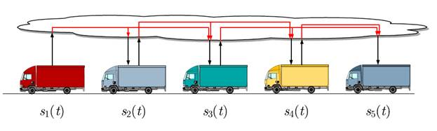
Поскольку автомобильная колонна представляет собой систему «лидер-ведомый» с безцикловым графом связи, можно ожидать, что он синхронизирован согласно следствию 4.2, если все управляемые автомобили асимптотически устойчивы. Чтобы показать более подробно, что на самом деле колонна хорошо вписывается в представленную до сих пор структуру синхронизации, рассмотрим типичную структуру контура регулирования скорости транспортных средств, показанную на рис. 4.11. Этот контур управления состоит из динамики транспортного средства \({G_{{\rm{V}}i}}\) с ускорением \({a_i}(t)\) в качестве входных данных и скоростью \({\upsilon _i}(t)\) в качестве выходных данных, а также контроллером скорости \({K_{{\rm{V}}i}}\). Сравнение рис. 4.9 и 4.11 показывает, что последовательное соединение блоков \({G_{{\rm{V}}i}}\) и \({K_{{\rm{V}}i}}\) представляет собой агент \({P_i}\) в смысле задачи синхронизации с ошибкой управления регулятора скорости в качестве входного сигнала \({u_i}(t)\) и скоростью в качестве выходного сигнала \({y_i}(t)\). Контур обратной связи может иметь дополнительный коэффициент усиления \(k\), как показано на рис. 4.9, который здесь установлен на \(k\) = 1 и опущен на рис. 4.11.
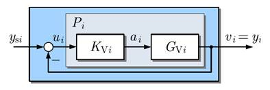
В этом примере используется аппроксимация первого порядка \[{G_{{\rm{V}}i}}:\quad {\dot \upsilon _i}(t) = -\dfrac{c}{m}{\upsilon _i}(t) + \dfrac{1}{m}{a_i}(t),\quad {\upsilon _i}(0) = {\upsilon _{i0}}\] динамики транспортного средства, где m обозначает массу транспортного средства, а \(C\) – константу трения. ПИ-регулятор \[{K_{{\rm{V}}i}}:\quad \left\{ \begin{array}{l}{{\dot x}_{ri}}(t) = {u_i}(t),\quad {x_{ri}}(0) = {x_{ri0}}\\{a_i}(t) = {k_{\rm{I}}}{x_{ri}}(t) + {k_{\rm{P}}}{u_i}(t)\end{array} \right.\] имеет ошибку управления \({u_i}(t)\) в качестве входного сигнала и ускорение \({a_i}(t)\) в качестве выходного сигнала. Модель агента \({P_i}\) получается объединением \({G_{{\rm{V}}i}}\) и \({K_{{\rm{V}}i}}\):
\[{P_i}:\quad \left\{ \begin{array}{c}\left( {\begin{array}{*{20}{c}}{{{\dot \upsilon }_i}(t)}\\{{{\dot x}_{ri}}(t)}\end{array}} \right) = \left( {\begin{array}{*{20}{c}}{ - \dfrac{c}{m}}&{\dfrac{{{k_{\rm{I}}}}}{m}}\\0&0\end{array}} \right)\left( {\begin{array}{*{20}{c}}{{\upsilon _i}(t)}\\{{x_{ri}}(t)}\end{array}} \right) + \left( {\begin{array}{*{20}{c}}{\dfrac{{{k_{\rm{P}}}}}{m}}\\1\end{array}} \right){\upsilon _i}(t)\\{y_i}(t) = \left( {\begin{array}{*{20}{c}}1&0\end{array}} \right)\left( {\begin{array}{*{20}{c}}{{\upsilon _i}(t)}\\{{x_{ri}}(t)}\end{array}} \right).\end{array} \right.\]Она имеет интегральную динамику, дополненную запаздывающим элементом первого порядка. Следующие параметры были использованы для получения результатов моделирования, обсуждаемых позже: \(m = 1000\;{\rm{kg}}\), \(c = 200\;\dfrac{{kg}}{s}\), \({k_{\rm{P}}} = 560\) и \({k_{\rm{I}}} = 160\).
Для определения поведения колонны модель управляемых транспортных средств строится путем объединения агента \({P_i}\) с обратной связью \[{u_i}(t) = {y_{si}}(t) - {y_i}(t)\] для получения \[{\bar \sum _i}:\quad \left\{ \begin{array}{c}\left( {\begin{array}{*{20}{c}}{{{\dot \upsilon }_i}(t)}\\{{{\dot x}_{ri}}(t)}\end{array}} \right) = \left( {\begin{array}{*{20}{c}}{ - \dfrac{{c + {k_{\rm{P}}}}}{m}}&{\dfrac{{{k_{\rm{I}}}}}{m}}\\{ - 1}&0\end{array}} \right)\left( {\begin{array}{*{20}{c}}{{\upsilon _i}(t)}\\{{x_{ri}}(t)}\end{array}} \right) + \left( {\begin{array}{*{20}{c}}{\dfrac{{{k_{\rm{P}}}}}{m}}\\1\end{array}} \right){y_{si}}(t)\\{\upsilon _i}(t) = \left( {\begin{array}{*{20}{c}}1&0\end{array}} \right)\left( {\begin{array}{*{20}{c}}{{\upsilon _i}(t)}\\{{x_{ri}}(t)}\end{array}} \right)\end{array} \right. \tag{4.49} \] с асимптотически устойчивой матрицей \[\bar A = \left( {\begin{array}{*{20}{c}}{ - \dfrac{{c + {k_{\rm{P}}}}}{m}}&{\dfrac{{{k_{\rm{I}}}}}{m}}\\{ - 1}&0\end{array}} \right) = \left( {\begin{array}{*{20}{c}}{ - 0.34}&{0.02}\\{ - 1}&0\end{array}} \right).\]
Благодаря следствию 4.2 автомобили синхронизируют свои скорости.
Модель ведущего транспортного средства не получается из модели агента \({P_1}\) заданием \({u_1}(t) = 0\), как в уравнении (4.45), но в этом приложении разумно предположить, что идущее впереди транспортное средство также имеет регулятор скорости с локальным заданным входом \({y_{s1}}(t)\), замененным заданным значением скорости \({\upsilon _{{\rm{ref}}}}(t)\) колонны:
\[{\bar \sum _1}:\quad \left\{ \begin{array}{c}\left( {\begin{array}{*{20}{c}}{{{\dot \upsilon }_1}(t)}\\{{{\dot x}_{r1}}(t)}\end{array}} \right) = \left( {\begin{array}{*{20}{c}}{ - \dfrac{{c + {k_{\rm{P}}}}}{m}}&{\dfrac{{{k_{\rm{I}}}}}{m}}\\{ - 1}&0\end{array}} \right)\left( {\begin{array}{*{20}{c}}{{\upsilon _1}(t)}\\{{x_{r1}}(t)}\end{array}} \right) + \left( {\begin{array}{*{20}{c}}{\dfrac{{{k_{\rm{P}}}}}{m}}\\1\end{array}} \right){\upsilon _{{\rm{ref}}}}(t)\\{\upsilon _1}(t) = \left( {\begin{array}{*{20}{c}}1&0\end{array}} \right)\left( {\begin{array}{*{20}{c}}{{\upsilon _1}(t)}\\{{x_{r1}}(t)}\end{array}} \right)\end{array} \right. \tag{4.50} \]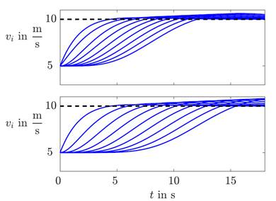
Общая колонна представлена моделью лидера (4.50), моделями ведомых (4.49) и отношением связи (4.40) с нормированной матрицей смежности (4.48). Ее поведение показано в верхней части рис. 4.12 для ситуации, когда автомобили 2, ..., 10 имеют начальную скорость \({\upsilon _{i0}} = 5\;{\textstyle{{\rm{m}} \over {\rm{s}}}}\) и должны разогнаться до скорости лидера \({\upsilon _{10}} = 10\;{\textstyle{{\rm{m}} \over {\rm{s}}}} = {\upsilon _{{\rm{ref}}}}\). На рисунке видно, что транспортные средства в цепочке адаптируют свою скорость один за другим за интервал времени около 10 с.
Если каждое транспортное средство сообщает о своей скорости только своему непосредственному преемнику, достигается гораздо более медленная адаптация скоростей, как показано в нижней части рисунка.
Обсуждение. Агенты \({P_i}\), рассмотренные в этом примере, обладают интегральной динамикой благодаря составной части контроллера \({K_{{\rm{V}}i}}\). Следовательно, синхронная траектория представляет собой постоянную скорость \(\bar \upsilon \;:\;{y_s}(t) = {\upsilon _{{\rm{ref}}}}\). Сходство этой проблемы с проблемой консенсуса очевидно. Единственная разница заключается в том, что агенты являются не чистыми интеграторами, а интеграторами, объединенными с системой временной задержки, которая представляет собой аппроксимацию динамики транспортного средства первого порядка.
При необходимости в обеих структурах связи достигается асимптотическая синхронизация. Однако с практической точки зрения переходное поведение необходимо исследовать более подробно, чтобы гарантировать предотвращение столкновений во всех дорожных ситуациях (см. раздел 5.4).
4.3.6 Синхронизация в полных сетях
В этом разделе рассматриваются \(N\) агентов, полностью связанных с нормированной матрицей Лапласа (4.46). Важным результатом будет 2n-мерное представление поведения агента внутри этой сети, которое существует с таким низким динамическим порядком, хотя вся система имеет динамический порядок N∙n. Эта модель существенно упрощает анализ агентской сети и, в частности, позволяет дать точную оценку сходимости ошибки синхронизации. Он также демонстрирует, как теория среднего поля, разработанная в физике, может быть применена при определенных условиях для упрощения анализа больших сетей.
Трансформация модели. Вся система \(\bar \sum \) описывается моделью в пространстве состояний (4.41) с матрицей \[\bar A = {I_N} \otimes A - k\hat L \otimes (b{c^T})\] (ср. уравнение (4.42)). Преобразование состояния \[\tilde x(t) = {T^{ - 1}}x(t) \tag{4.51} \] с \[T = \tilde T \otimes {I_n},\quad {T^{ - 1}} = {\tilde T^{ - 1}} \otimes {I_n}\] и (\(N\) × \(N\))-матрицами \[\tilde{T}=\left( \begin{matrix} 1 & 0 & \cdots & 0 & 1 \\ 0 & 1 & {} & 0 & 1 \\ \vdots & {} & \ddots & {} & \vdots \\ 0 & 0 & {} & 1 & 1 \\ -1 & -1 & \cdots & -1 & 1 \\ \end{matrix} \right),\quad {{\tilde{T}}^{-1}}=\dfrac{1}{N}\left( \begin{matrix} (N-1) & \cdots & -1 & -1 \\ -1 & {} & -1 & -1 \\ \vdots & \ddots & {} & \vdots \\ -1 & {} & (N-1) & -1 \\ 1 & \cdots & 1 & 1 \\ \end{matrix} \right)\] применяется для получения преобразованных матриц \[\begin{array}{c}{T^{ - 1}}\bar AT = ({{\tilde T}^{ - 1}} \otimes {I_n})\left( {{I_N} \otimes A - k\hat L \otimes (b{c^{\rm{T}}})} \right)(\tilde T \otimes {I_n})\\ = \left( {{{\tilde T}^{ - 1}} \otimes A - k{{\tilde T}^{ - 1}}\hat L \otimes (b{c^{\rm{T}}})} \right)(\tilde T \otimes {I_n})\\ = {I_N} \otimes A - k{{\tilde T}^{ - 1}}\hat L\tilde T \otimes (b{c^{\rm{T}}})\end{array}\] (ср. уравнение (A2.15)) и \[{{\tilde{T}}^{-1}}\hat{L}\tilde{T}=\left( \begin{matrix} \dfrac{N}{N-1} & {} & {} & {} & {} \\ {} & \dfrac{N}{N-1} & {} & {} & {} \\ {} & {} & \ddots & {} & {} \\ {} & {} & {} & \dfrac{N}{N-1} & {} \\ {} & {} & {} & {} & 0 \\ \end{matrix} \right)\] для \(\hat L\) из уравнения (4.46). Таким образом, получается следующее эквивалентное представление системы \(\bar \sum \): \[ \bar{\sum }:\quad \left\{ \begin{align} & \dot{\tilde{x}}(t)=\left( \begin{matrix} {{{\bar{A}}}_{a}} & {} & {} & {} & {} \\ {} & {{{\bar{A}}}_{a}} & {} & {} & {} \\ {} & {} & \ddots & {} & {} \\ {} & {} & {} & {{{\bar{A}}}_{a}} & {} \\ {} & {} & {} & {} & A \\ \end{matrix} \right)\tilde{x}(t),\quad \tilde{x}(0)={{{\tilde{x}}}_{0}}={{T}^{-1}}{{x}_{0}} \\ & y(t)=\left( \begin{matrix} {{c}^{\text{T}}} & {} & {} & {{c}^{\text{T}}} \\ {} & \ddots & {} & \vdots \\ {} & {} & {{c}^{\text{T}}} & {{c}^{\text{T}}} \\ -{{c}^{\text{T}}} & \cdots & -{{c}^{\text{T}}} & {{c}^{\text{T}}} \\ \end{matrix} \right)\tilde{x}(t) \\ \end{align} \right. \tag{4.52} \] с матрицей \({\bar A_a}\), заданной уравнением (4.47): \[{\bar A_a} = A - k\dfrac{N}{{N - 1}}b{c^{\rm{T}}}. \tag{4.53} \]
После разложения преобразованного состояния \[\tilde x(t) = {(\tilde x_1^{\rm{T}}(t)\;\tilde x_2^{\rm{T}}(t)\; \ldots \;\tilde x_N^{\rm{T}}(t))^{\rm{T}}}\] на \(N\)-мерные компоненты из соотношения преобразования (4.51) следует, что исходное состояние \({\tilde x_0}\) имеет компоненты \[{\tilde x_{i0}} = \dfrac{{N - 1}}{N}{x_{i0}} - \dfrac{1}{N}\sum\limits_{j = 1,j \ne i}^N {{x_{j0}}} ,\quad i = 1,\; \ldots ,\;N - 1 \tag{4.54} \] \[{\tilde x_{N0}} = \dfrac{1}{N}\sum\limits_{j = 1}^N {{x_{j0}}} = {x_{s0}}. \tag{4.55} \]
Поскольку из выхода каждого агента \({y_i}(t)\) наблюдается только часть системы \(\bar \sum \), поведение \(i\)-го агента описывается моделью порядка 2\(N\)
\[ \sum_i:\quad \begin{cases} \begin{pmatrix} \dot{\tilde{x}}_i(t) \\ \dot{x}_s(t) \end{pmatrix} = \begin{pmatrix} \bar{A}_a & 0 \\ 0 & A \end{pmatrix} \begin{pmatrix} \tilde{x}_i(t) \\ x_s(t) \end{pmatrix}, & \begin{pmatrix} \tilde{x}_i(0) \\ x_s(0) \end{pmatrix} = \begin{pmatrix} \tilde{x}_{i0} \\ x_{s0} \end{pmatrix} \\ y_i(t) = \begin{pmatrix} c^{\mathrm{T}} & c^{\mathrm{T}} \end{pmatrix} \begin{pmatrix} \tilde{x}_i(t) \\ x_s(t) \end{pmatrix}, & i = 1,2,\ldots,N. \end{cases} \tag{4.56} \]По сравнению с уравнением (4.52) второй компонент вектора состояния был переименован в \({x_s}(t)\), поскольку соответствующая часть модели читается как \[{\sum _s}:\quad {\dot x_s}(t) = A{x_s}(t),\quad {x_s}(0) = {x_{s0}},\] и имеет начальное состояние \({x_{s0}}\), заданное в уравнении (4.55), и совпадает с виртуальной эталонной системой. Первую часть модели (4.56) обозначим \[\widetilde{\sum}_i:\quad \dot{\tilde{x}}_i(t) = \bar{A}_a \tilde{x}_i(t),\quad \tilde{x}_i(0) = \tilde{x}_{i0}.\]
Она получается для \(i\) = 1, 2, ..., \(N-1\) удалением ненаблюдаемых частей уравнения (4.52), но она справедлива и для \(i\) = \(N\). Выход агента представляет собой сумму выходов двух компонент модели:
\[{y_i}(t) = {c^{\rm{T}}}{\tilde x_i}(t) + {c^{\rm{T}}}{x_s}(t).\]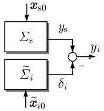
На рис. 4.13 показана структура модели, которая интуитивно привлекательна, в частности, для анализа сетевых систем с большим количеством подсистем. Это явно показывает, что поведение многих связанных подсистем может быть представлено средним поведением, генерируемым \({\sum _s}\) вместе со второй моделью \({\tilde \sum _i}\), которая описывает отклонение индивидуального состояния \({x_i}(t)\) от среднего состояния. \({x_s}(t)\) является средним состоянием всех агентов, поскольку преобразование (4.51) с заданной матрицей \({T^{ - 1}}\) дает в последней строке
\[{\tilde x_N}(t) = \dfrac{1}{N}\sum\limits_{i = 1}^N {{x_i}(t)} = {x_s}(t).\]Для другой компоненты \({\tilde x_i}(t)\) состояния \({\bar \sum _i}\) соотношение преобразования подразумевает, что состояние \[{\tilde x_i}(t) = \dfrac{1}{N}\sum\limits_{j = 1,j \ne i}^N {({x_i}(t) - {x_j}(t))} = {x_i}(t) - {x_s}(t),\quad i = 1,2, \ldots ,N\] описывает разницу между состоянием агента \({x_i}(t)\) и средним \({x_s}(t)\).
Эта модель аналогична той, которая использовалась в теории среднего поля в физике для изучения сложных систем со многими компонентами. Мы занимаем позицию одного компонента и пытаемся представить эффект взаимодействия со всеми остальными компонентами с помощью простой приближенной модели. Уравнение (4.56) показывает, что при синхронизации идентичных агентов с полными связями такое представление \(i\)-го агента даже в точности совпадает с большой моделью (4.52) и шаг от модели высокого порядка к модели низкого порядка не включает каких-либо приближений.
Поведение агента. Явное представление поведения \(i\)-го агента внутри полностью связанной сети получается как решение модели (4.56):
Правый член представляет собой синхронную траекторию \[{y_s}(t) = {c^{\rm{T}}}{e^{At}}\dfrac{1}{N}\sum\limits_{j = 1}^N {{x_{j0}}} , \tag{4.58} \] порождаемую моделью неуправляемого агента со средним начальным состоянием. Этот результат совпадает с характеристикой виртуальной эталонной системы в теореме 4.2 для используемого здесь графа со сбалансированным весом.
Левый член описывает переходное поведение \[{y_{i{\rm{trans}}}}(t) = {c^{\rm{T}}}{e^{{{\bar A}_a}t}}{\tilde x_{i0}}, \tag{4.59} \] которое зависит от преобразованного начального состояния \({\tilde x_{i0}}\) \(i\)-го агента, заданного уравнением (4.54). Он переводит агента \({P_i}\) из исходного состояния на синхронную траекторию. Агенты синхронизируются \[{y_{i{\rm{trans}}}}(t)\mathop \to \limits^{t \to \infty } 0,\quad i = 1,2, \ldots ,N\] если матрица \({\bar A_a}\) асимптотически устойчива, что совпадает с условием, поставленным на матрице (4.47).
При больших \(N\) эта матрица не меняется при появлении или удалении агентов в сети. Следовательно, условие синхронизации выполняется (почти) независимо от количества связанных агентов.
Выбор коэффициента усиления обратной связи \(k\). Скорость затухания переходного режима зависит от собственных значений \({\lambda _i}\{ {\bar A_a}\} \), (\(i=1,2,\dots,N\)) матрицы \({\bar A_a}\), определяемой уравнением (4.53). Кратковременное переходное поведение получается, если этим собственным значениям приписать большие отрицательные части. Соответственно, силу связи \(k\) необходимо выбирать так, чтобы минимизировать максимальную действительную часть собственных значений:
\[k = \arg \;\min \mathop {\max }\limits_{i = 1, \ldots ,n} {\mathop{\rm Re}\nolimits} ({\lambda _i}\{ {\bar A_a}\} ). \tag{4.60} \]Если максимальное собственное значение обозначается \({\lambda _{\max }}\), время \({T_{{\rm{sync}}}}\) для синхронизации агентов примерно в пять раз превышает соответствующую постоянную времени:
\[{T_{{\rm{sync}}}} \approx \dfrac{5}{{\left| {{\mathop{\rm Re}\nolimits} \left( {{\lambda _{\max }}} \right)} \right|}}.\]Эту задачу проектирования можно решить с помощью методов корневого годографа для системы \((A,b,{c^{\rm{T}}})\) с пропорциональной обратной связью по выходу \(k{\textstyle{N \over {N - 1}}}\). Обратите внимание: хотя переходное поведение рассматривается для всей системы, в задаче проектирования используется только модель одного агента.
Изначально синхронизированные агенты. Агенты со связями «все-ко-всем» обладают особым свойством, которое сейчас следует объяснить. Грубо говоря, если некоторые из агентов синхронизированы между собой в момент времени \(t = 0\), то эти агенты остаются синхронизированными на протяжении всего будущего времени \(t > 0\). Это свойство обычно теряется, когда полная структура связи высвобождается в топологии с меньшим количеством каналов связи.
Для более строгой формулировки результата обозначим индексное множество агентов с одинаковым начальным состоянием \({\tilde x_0}\) через \(\bar {\rm N}\):
\[{x_i}(0) = {\tilde x_0},\quad i \in \bar {\rm N}. \tag{4.61} \]Эти агенты называются первоначально синхронизированными, поскольку дальнейшие исследования покажут, что из уравнения (4.61) следует \[{y_i}(t) = \tilde y(t),\quad i \in \bar {\rm N},\;t \ge 0 \tag{4.62} \] для некоторой общей траектории \(\tilde y(t)\).
Согласно уравнению (4.57) траекторию всех агентов можно представить как сумму синхронной траектории \({y_s}(t)\), одинаковой для всех агентов, и переходного поведения \({y_{i{\rm{trans}}}}(t)\), начинающегося в индивидуальном начальном состоянии \({\tilde x_{i0}}\), заданное в уравнении (4.54). Благодаря уравнению (4.61) агенты множества \(\bar {\rm N}\) имеют одинаковое начальное состояние, которое обозначается \(\bar x\). Уравнение (4.54) дает
\[\begin{array}{c}{{\tilde x}_{i0}} = \dfrac{{N - 1}}{N}{x_{i0}} - \dfrac{1}{N}\sum\limits_{j \in \bar {\rm N},j \ne i}^N {{x_{j0}}} - \dfrac{1}{N}\sum\limits_{j \notin \bar {\rm N}}^N {{x_{j0}}} \\ = \dfrac{{N - 1}}{N}{{\tilde x}_0} - \dfrac{{\left| {\bar {\rm N}} \right|}}{N}{{\tilde x}_0} - \dfrac{1}{N}\sum\limits_{j \notin \bar {\rm N}}^N {{x_{j0}}} \\ = \bar x,\quad i \in \bar {\rm N}.\end{array}\]Следовательно, модели (4.56) всех этих агентов имеют одинаковое начальное состояние \[\left( {\begin{array}{*{20}{c}}{{{\tilde x}_i}(0)}\\{{x_s}(0)}\end{array}} \right) = \left( {\begin{array}{*{20}{c}}{\bar x}\\{{x_{s0}}}\end{array}} \right),\quad i \in \bar {\rm N},\] переходное поведение одинаково, как и общая траектория, из чего следует соотношение (4.62).
В полностью связанных агентских сетях агенты множества \(\bar {\rm N}\), стартующие в одном и том же начальном состоянии, остаются синхронизированными все будущее время независимо от поведения агентов, не принадлежащих множеству \(\bar {\rm N}\).